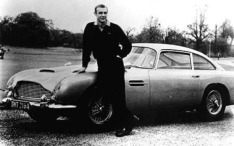

Comments from the Press:
From: 123News:
"Zoom-Zoom Fans has become one of the most fascinating and reliable Sport Center sources on the Internet!"
said by John Harris, October 01, 2012
Zoom-Zoom Fans was created in 2004 all from a man who had a passion about sports cars for over 40 years. This man, known as Will Jones felt it would be a great idea to share his insightful and fascinating knowledge about old and new sports cars to people with the same type of passion. With this one thought, Will Jones created Zoom-Zoom Fans, which allows anyone with the love of sports cars to stay up-to-date and even the first to know the newest and extraordinary sports car just created. Now, some may thing they can find their own information about the newest sports cars, but Will Jones has made deals with top sports car manufacturers to share their fascinating details about their new speed-demon creations. So, why hassle around for insightful information when Will Jones already has it for you? Zoom-Zoom Fans allows people to grow and fuel their love for sports cars. Be the first to share the intriguing information about those sexy, speed machines!
Photo:"Mr. Will Jones leaning on one of his 3 cars, back in 1962"
From: 123News:
"Zoom-Zoom Fans has become one of the most fascinating and reliable Sport Center sources on the Internet!"
said by John Harris, October 01, 2012
Form content goes here